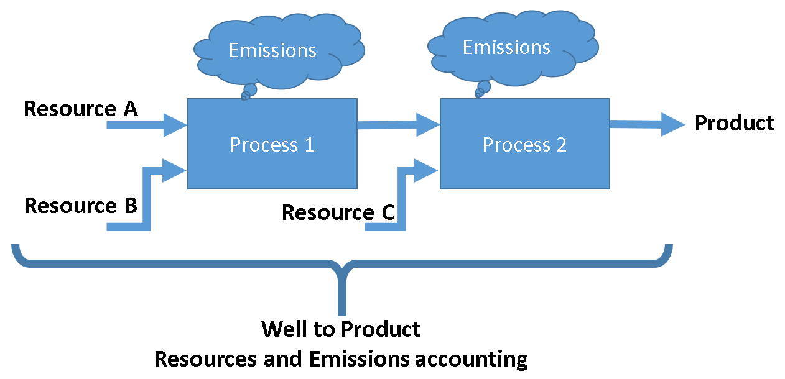
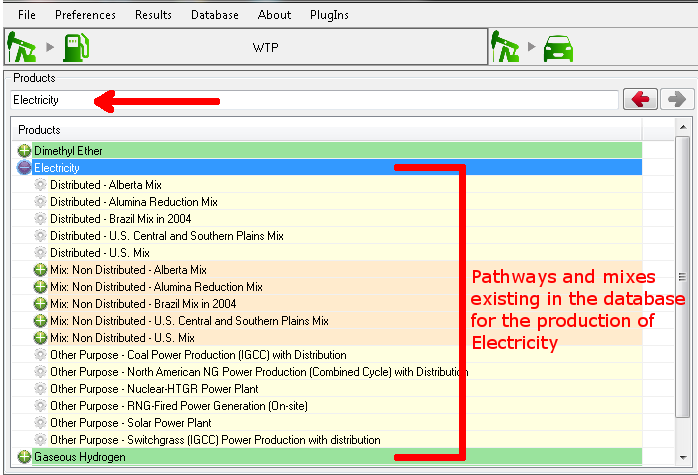
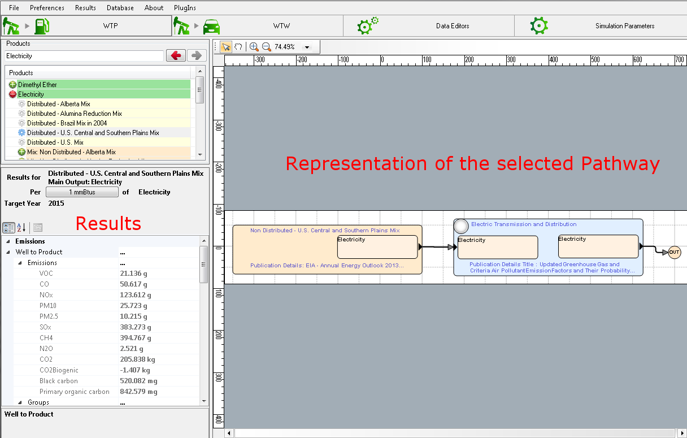
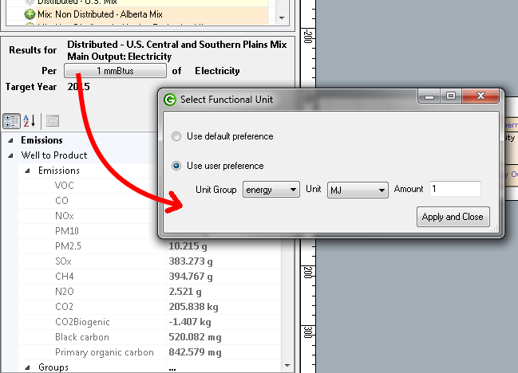
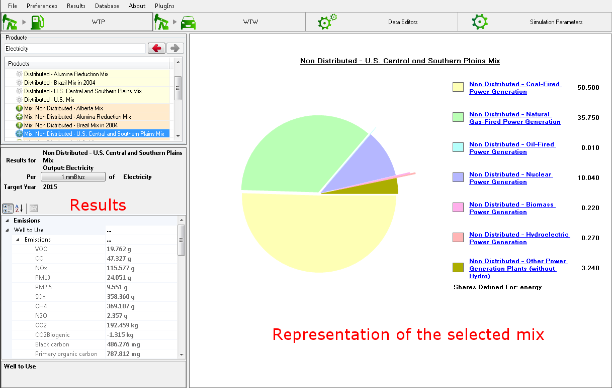

Well to Product ExplorerThe well to product explorer is the place to start if you want to look at life cycle upstream associated with the production of a product (usually products are fuels). 
The example above is a very simplified version of a pathway with two processes. They both require resources as inputs, have a single product as an output, and generate emissions. As we talk about
Well to Product, keep in mind the boundaries of the system shown above.
Well to Product : Accounting Well to Product for a very simplified pathway representation
Electricity production pathwayAs a first example, we're going to explore the results associated with the production of Electricity. Electricity is produced in different ways in different parts of the world. The GREET database is focused on United States production, but some other pathways are also available. For this example, we're going to focus on Electricity Produced in the U.S., in the central and southern plains region. Then we'll compare the results with the electricity produced in average in the United States. First, to see results associated with Electricity we have to look for the product "Electricity" in the database. 
By typing "Electricity" in the WTP (well to product) search box, the list below only shows pathways and mixes that contain "Electricity" in their name. We know that we're not
interested in the production of Dimethyl Ether, nor Gaseous Hydrogen, but we are going to double click on Electricity to expand the product and see all available pathways and mixes
that produce electricity. The naming convention of the electricity production pathway is described as: The pathways that are "Distributed" include the transmission and distribution losses to the consumers, the "Non-Distributed" are not
accounting for these losses.
Well to Product Explorer : Searching for Electriticy
We're now going to click on "Distributed - U.S. Central and Southern Plans Mix". By doing this, the representation of the pathway will be displayed on the right side, and the results associated with the main output on the bottom left side: 
On the right side we can see that the only difference between the Non-Distributed and Distributed versions is that an extra process is added to the pathway. The "Electric Transmission and Distribution" process
is there to simulate the losses in transformers and transmission lines.
Well to Product Explorer : Selection of a Pathway
The results shown on the bottom right are by default representing how much energy and emissions is associated with the production of 1mmBtu of electricity. We're first going to see how this functional unit can be modified. In order to modify the functional unit click on the button showing currently "1mmBtu", then in the new window, enter 1 MJ as a functional unit: 
Well to Product Explorer : Changing the functional unit of the results
Now the results are expressed per 1MJ of electricity. The results are organized into categories:
Electricity production mixBesides pathways and processes. GREET has the notion of a mix. Basically a mix is an instance capable only to aggregate and weight average the upstream of different pathways or other mixes. To illustrate this we're going to explore the results for the mix called "Non Distributed - U.S. Central and Southern Plains Mix" 
The representation above is the electricity generation mix for central and southern plain in the U.S. This is the mix that is used in the pathway we described before. This mix was used in the pathway as to "feed" the transportation
and distribution losses process.
Well to Product Explorer : Representation of a mix
In the case of a mix, the representation on the right shows the shares for all the different pathways combined in the mix. The results on the bottom left respect the same logic as before: The functional unit can be changed as well, and the "Well to Product" results still account for all emissions and energy necessary in the production of electricity up to that point when we aggregate multiple pathways. By comparing the results of this mix with the results of the pathway described above (and by keeping the same functional unit) you should observe that the mix results are slightly lower than the pathway results. In that case the relative difference should be equal to the efficiency of the "Electric Transmission and Distribution" efficiency. |